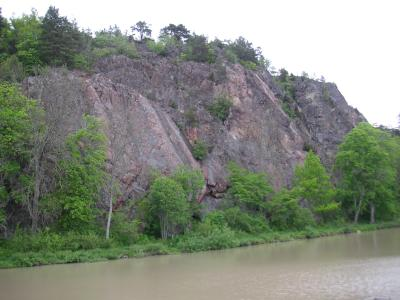

GPS: 58.48158,16.32894
Kategori:vertikaltKategori:svaKategori:tradKategori:sport 
Parkera på något bra ställe i Söderköping, lämpligtvis i närheten av kanalen. Korsa kanalen vid slussen och följ kanalen åt höger (österut). Efter c:a 200 meter är ni framme vid klippan.
Förare tillhandahållen av
.
Kategori:Östergötland
Copyright (C) Permission is granted to copy, distribute and/or modify this document under the terms of the GNU Free Documentation License, Version 1.3